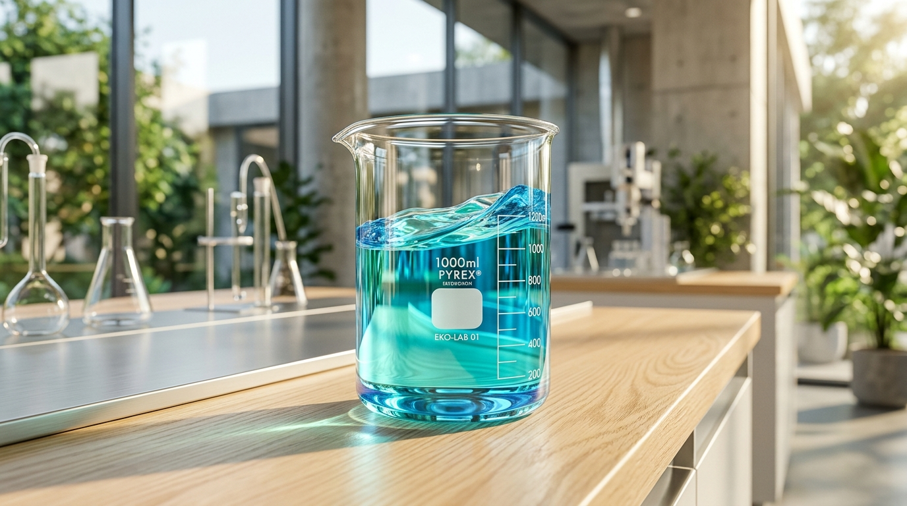
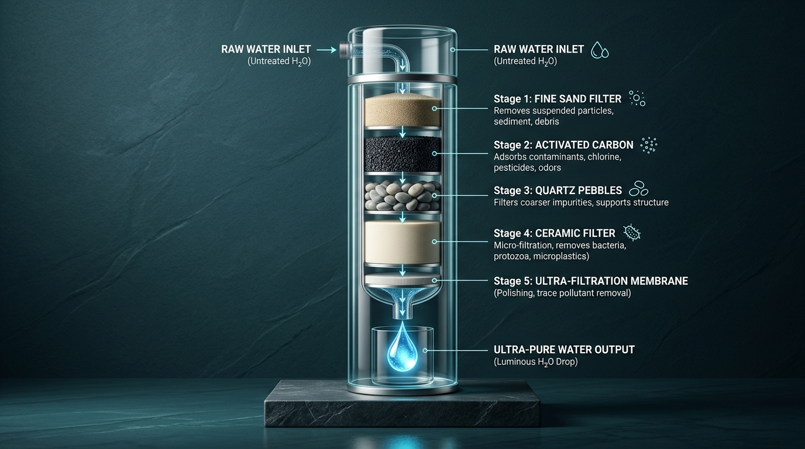

Belajar Mengenal Air Bersih dan Sanitasi Sehat untuk Keluarga
Selamat datang di AirKita! Website edukasi ini dibuat untuk memudahkan kita memahami ciri-ciri air yang layak diminum, mengukur keasaman (pH) air, merawat septic tank, hingga menghitung kebutuhan air harian dengan panduan sederhana.

Uji Kualitas Fisik, Skala pH & Pemantauan Air
Kenali ciri fisik air, pahami derajat keasaman (pH), dan gunakan lembar riwayat pemantauan berkala.
1. Cek Kelayakan Fisik Air & Rekomendasinya
Gunakan gelas kaca bening berlatar belakang kertas putih, lalu amati air Anda berdasarkan 4 parameter fisik berikut:
| Parameter | Ciri Air yang Terlihat | Status Kelayakan | Rekomendasi Tindak Lanjut |
|---|---|---|---|
| 1. Warna | Jernih bening tidak berwarna | Layak | Bagus. Rebus hingga mendidih 100°C (3-5 menit) sebelum diminum. |
| 1. Warna | Kuning / Cokelat muda | Perlu Olah | Ada zat organik/besi. Gunakan filter karbon aktif dan saringan sedimen. |
| 1. Warna | Cokelat lumpur / Kemerahan | Tidak Layak | Besi tinggi atau tanah. Endapkan dengan tawas 50mg/L lalu lewatkan pasir silika. |
| 2. Bau | Tidak berbau apa pun | Layak | Kondisi ideal sesuai Permenkes. Simpan dalam wadah tertutup rapat. |
| 2. Bau | Bau besi / karat / telur busuk | Tidak Layak | Kandungan gas H2S / Fe. Lakukan aerasi semprotan terbuka dan filter karbon aktif. |
| 2. Bau | Bau kaporit menyengat | Perlu Olah | Endapkan air dalam ember terbuka selama 1-2 jam agar gas klorin menguap. |
| 3. Rasa | Tawar segar (bebas rasa aneh) | Layak | Air aman untuk dimasak dan dikonsumsi sehari-hari. |
| 3. Rasa | Asin / Asam / Pahit kesat | Tidak Layak | Asin = intrusi air laut; Pahit = kesadahan kapur tinggi. Perlu filter resin / RO. |
| 4. Kekeruhan | Bening tanpa butiran melayang | Layak | Kekeruhan rendah di bawah batas 5 NTU. Aman. |
| 4. Kekeruhan | Keruh / Butek / Mengendap | Perlu Olah | Pasang saringan sedimen spun 5 mikron dan kain kasa saring bertingkat. |
2. Cek Derajat Keasaman (pH) Air & Kategorinya
Skala pH berkisar dari 0 hingga 14. Baku mutu resmi air minum menurut Permenkes RI No. 2 Tahun 2023 adalah pH 6.5 – 8.5.
Ciri & Rasa: Terasa agak masam/kesat. Sering ditemukan di daerah rawa gambut atau air hujan asam.
Dampak: Bersifat korosif mengikis pipa besi/tembaga hingga berkarat, serta kurang baik untuk lambung.
Ciri & Rasa: Segar, tawar, tidak berasa asam maupun licin. Sangat ramah bagi pencernaan manusia.
Dampak: Tidak merusak pipa, menjaga keseimbangan cairan tubuh, ideal untuk diminum dan memasak.
Ciri & Rasa: Terasa sedikit licin di kulit seperti air sabun encer dan terasa pahit di lidah.
Dampak: Mempercepat penumpukan kerak kapur putih tebal di pipa, ketel pemanas, dan dinding toren.
3. Alur Pemeriksaan Kualitas Air & Saran Tindak Lanjut
Gunakan panduan alur 3 langkah ini jika Anda ingin memeriksa sumber air baru di rumah atau lingkungan:
Inspeksi Sumber Air
Periksa jarak antara bibir sumur Anda dengan sumber pencemar (septic tank, kandang ternak, tempat sampah). Pastikan jaraknya minimal 10 hingga 15 meter.
Uji Fisik & pH Mandiri
Ambil sampel air dalam botol bening. Amati apakah jernih, cium baunya, dan gunakan kertas lakmus / indikator universal untuk memastikan pH berada di antara 6.5 – 8.5.
Tindak Lanjut & Sterilisasi
Bila air keruh, pasang filter pasir & arang. Bila berbau, lakukan aerasi. Sebelum diminum, wajib selalu merebus air hingga mendidih 100°C selama 3–5 menit.
Lembar Riwayat Pemantauan Kualitas Air Berkala
Sesuai Fungsional 12, kondisi air perlu dipantau dari waktu ke waktu. Tabel di bawah ini adalah format resmi riwayat pemantauan yang dapat Anda simpan atau cetak untuk mencatat kondisi air keluarga setiap bulan:
| No | Tanggal Pantau | Sumber Air | Warna & Bau | Nilai pH | Status Kelayakan | Rekomendasi Tindakan | Keterangan |
|---|---|---|---|---|---|---|---|
| 1 | 27 Oktober 2026 | Sumur Bor Rumah | Jernih, Bebas Bau | 7.2 (Netral) | Layak Minum | Rebus hingga 100°C sebelum diminum | Kondisi prima |
| 2 | 15 Oktober 2026 | PDAM Perpipaan | Jernih, Bau Kaporit Ringan | 7.5 (Netral) | Layak | Diamkan 1 jam di wadah terbuka sebelum dimasak | Kaporit hilang alami |
| 3 | 02 Oktober 2026 | Sumur Gali Tradisional | Kekuningan, Bau Tanah | 6.2 (Agak Asam) | Perlu Olah | Kuras sumur, ganti media arang filter | Pasca hujan deras |
| 4 | Catatan Baru | Sumur / PDAM Anda | Isi hasil amatan | Isi angka pH | Layak / Waspada | Tindakan yang dilakukan | Paraf / Status |
💡 Tips untuk Pemula: Catat kondisi air Anda minimal satu kali setiap bulan agar perubahan kualitas air tanah pasca musim hujan atau kemarau dapat langsung diantisipasi.
Materi Edukasi Air & Sanitasi Terpadu
Pelajari 4 topik penting: menjaga kebersihan sumber air, mengatasi masalah air rumah tangga, mengelola limbah/septic tank, serta mewaspadai penyakit air.
1. Jarak Aman 10 – 15 Meter
Pastikan bibir sumur air minum berjarak minimal 10–15 meter dari septic tank, tempat sampah, atau kandang hewan agar bakteri coliform tidak merembes.
2. Kuras Toren Tiap 3 – 6 Bulan
Dasar tandon/toren penampungan air sering menumpuk endapan debu, lumpur halus, dan lumut. Kuras secara berkala tanpa menggunakan bahan kimia beracun.
3. Rebus Air Hingga Mendidih 100°C
Mendidihkan air hingga muncul gelembung bergolak selama 3–5 menit adalah cara alami paling ampuh membunuh 99.9% bakteri patogen penyebab diare.
4. Buat Lubang Biopori & Resapan
Lubang biopori di halaman membantu meresapkan air hujan ke dalam tanah, menjaga ketersediaan air sumur saat kemarau, dan mencegah banjir.
Air Keruh / Berlumpur
Penyebab: Erosi tanah saat hujan lebat, sumur terlalu dangkal, atau saringan pompa jebol.
- Endapkan air dalam bak penampung pertama selama 2–4 jam.
- Gunakan tawas (Aluminium Sulfat) dosis 50 mg per liter air untuk mengikat lumpur.
- Lewatkan air melalui saringan pasir silika dan kain filter sedimen.
Air Berbau Besi / Telur Busuk
Penyebab: Kadar zat besi (Fe), mangan, atau gas hidrogen sulfida (H2S) yang tinggi di dalam tanah.
- Aerasi: Semburkan air lewat pipa pancuran terbuka agar zat besi mengendap.
- Gunakan media Karbon Aktif Granular (Arang Batok Kelapa) untuk menyerap bau amis dan kaporit.
- Tambahkan media pasir mangan (zeolit) untuk menyaring karat besi.
Debit Air Kecil / Mampet
Penyebab: Kerak kapur menyumbat moncong kran pipa, muka air sumur turun saat kemarau, atau pompa aus.
- Bongkar ujung saringan moncong kran, rendam dalam larutan cuka hangat untuk rontokkan kerak putih.
- Cek kebocoran pipa bawah tanah dengan menutup semua kran dan melihat meteran air.
- Tinggikan posisi toren air untuk memperbesar tekanan gravitasi alami.
1. Standar Septic Tank SNI
Septic tank bukan sekadar kubangan tanah terbuka. Standar SNI 03-2398-2002 mensyaratkan:
- Dinding dan lantai wajib kedap air (cor beton atau fiberglass) agar bakteri tinja tidak merembes ke air tanah.
- Wajib punya 2 ruang: ruang pengurai lumpur dan ruang resapan.
- Jarak ke sumur minimal 10 meter (tanah lempung) atau 15 meter (tanah pasir).
- Lakukan penyedotan lumpur tinja rutin setiap 2–3 tahun sekali.
2. Limbah Deterjen & Greywater
Air bekas cucian piring dan pakaian (greywater) mengandung zat surfaktan dan fosfat yang berbahaya:
- Jangan buang air cucian langsung ke dekat sumur atau selokan terbuka karena memicu bau comberan dan membunuh mikroba tanah.
- Gunakan deterjen ramah lingkungan yang bebas fosfat (Phosphate-Free).
- Buat bak taman sanita (selokan kerikil dengan tanaman air melati air / typha) untuk menyaring busa deterjen secara alami.
3. Bahaya Minyak Jelantah & 'Fatberg'
Satu liter minyak jelantah dapat mencemari hingga satu juta liter air tanah:
- Jangan buang minyak ke wastafel atau kloset! Minyak akan membeku dan menyatu dengan kalsium sabun membentuk batu lemak raksasa (fatberg) yang menyumbat total pipa saluran pembuangan.
- Tampung minyak bekas di botol atau jeriken bekas.
- Setorkan ke Bank Sampah atau pengumpul jelantah untuk didaur ulang menjadi biodiesel ramah lingkungan.
Air yang terkontaminasi bakteri atau zat kimia dapat memicu berbagai penyakit berbahaya (waterborne diseases):
Diare & Kolera
Gejala: Buang air besar cair terus menerus, mual, lemas, dan dehidrasi cepat.
Demam Tifoid (Tipes)
Gejala: Demam tinggi terutama sore dan malam hari, lidah putih kotor, lemas dan sakit perut.
Leptospirosis
Gejala: Demam tinggi mendadak pasca banjir, mata merah tanpa kotoran, dan nyeri hebat pada betis.
Hepatitis A & Kulit
Gejala: Badan letih, air kencing pekat seperti teh tua, mata menguning, atau kulit gatal bentol.
Teknologi Saringan Air & Estimasi Biaya Kebutuhan
Pelajari cara membuat filter air bertingkat sendiri di rumah serta panduan hitung belanja air keluarga.
1. Solusi Saringan Air Bertingkat & Kampanye Kebersihan
Bila air di rumah agak keruh atau berbau, Anda dapat membuat tabung saringan mandiri menggunakan bahan-bahan lokal dengan susunan berjenjang berikut:

Berfungsi menyaring kotoran fisik, lumpur halus, dan partikel debu yang melayang di air.
Berfungsi menyerap bau karat, bau amis, sisa pestisida, rasa aneh, dan warna kekuningan.
Berfungsi sebagai alas penahan aliran air agar media arang dan pasir tidak ikut larut keluar.
Masukkan air jernih ke botol plastik bening, lalu jemur di bawah terik sinar matahari selama 6 jam. Sinar UV matahari akan mensterilkan kuman secara alami.
🌱 Kampanye Sanitasi Nasional (STBM 5 Pilar):
Membiasakan Stop Buang Air Besar Sembarangan, Cuci Tangan Pakai Sabun, Pengelolaan Air Minum dan Makanan Rumah Tangga, Pengelolaan Sampah, dan Pengelolaan Limbah Cair Rumah Tangga.
2. Estimasi Biaya Kebutuhan Air Keluarga (Normal vs Kemarau)
Sesuai Fungsional 10, berikut adalah panduan simulasi belanja air minum galon harian dan lonjakan biaya saat musim kemarau untuk keluarga beranggotakan 4 orang:
Perhitungan: 3.5 galon per minggu × Rp 19.000 per galon × 4.33 minggu.
| Komponen Kebutuhan Air | Pemakaian Rata-rata | Estimasi Biaya |
|---|---|---|
| Air Galon Harian (1 Tahun) | ~15 galon / bulan × 12 bulan | Rp 3.456.000 / tahun |
| Tambahan Saat Musim Kemarau (Beli air tangki 5.000L saat sumur mengering) |
2 tangki / bulan selama 3 bulan kemarau | + Rp 1.680.000 (@ Rp 280.000 / tangki) |
| TOTAL PENGELUARAN AIR PER TAHUN | Air minum + Tambahan kemarau | Rp 5.136.000 / tahun |
💰 Tips Cerdas Menghemat Biaya Air:
Bila keluarga Anda berinvestasi memasang tabung filter air mandiri (biaya sekitar Rp 1.500.000 satu kali beli + ganti media Rp 300.000 per tahun), Anda bisa menghemat belanja air hingga lebih dari Rp 3.000.000 setiap tahunnya!
Laporan Masalah Air, Saran Pemerintah & Pengelola
Kirimkan laporan gangguan air tanpa registrasi akun, serta lihat saran aksi bagi pemerintah dan masyarakat.
1. Formulir Laporan Masalah Air & Saran Warga
Ada air keruh, saluran mampet, pipa bocor, atau septic tank meluap di lingkungan Anda? Sampaikan laporan Anda di formulir ini:
📋 Papan Pemantauan Laporan Warga Terkini:
| ID Tiket | Wilayah | Jenis Masalah | Status Penanganan |
|---|---|---|---|
#LAP-001 |
Kec. Sukamaju, RT 04 | Air Keruh & Berbau Besi | Sedang Diproses |
#LAP-002 |
Kel. Melati Berseri, Blok C | Saluran Tersumbat Minyak | Selesai Ditangani |
#LAP-003 |
Desa Karanganyar, Dusun 3 | Sumur Kering saat Kemarau | Menunggu Bantuan |
2. Saran Strategis Bagi Pemerintah & Masyarakat
Menjaga kelestarian air dan sanitasi adalah tanggung jawab bersama antara penentu kebijakan dan warga masyarakat:
Saran & Rekomendasi Bagi Pemerintah:
- Perluasan Jaringan PDAM: Memperluas pipa air bersih ke permukiman padat untuk mengurangi penyedotan air tanah berlebihan.
- Pengawasan Baku Mutu & Septic Tank: Melakukan uji berkala kualitas air minum serta mewajibkan sertifikat tangki septik kedap air pada izin bangunan rumah (PBG).
- Bantuan Saat Kemarau: Menyediakan subsidi tandon air komunal dan dropping mobil tangki air bersih bagi desa yang rawan kekeringan.
Peran Aktif & Saran Bagi Masyarakat:
- Penerapan Hidup Bersih: Menjaga jarak bibir sumur minimal 10–15 meter dari septic tank dan selalu merebus air hingga 100°C sebelum diminum.
- Kelola Minyak & Sampah: Jangan buang minyak jelantah bekas ke wastafel dan rutin gotong royong membersihkan selokan dari sampah plastik.
- Hemat & Buat Resapan: Mematikan kran air saat tidak dipakai serta membuat lubang biopori di pekarangan rumah untuk tabungan air tanah.
Panduan Pengelolaan Berkas Data Website untuk Admin
Sesuai ketentuan Fungsional 13: "Admin dapat mengelola konten dan meninjau laporan; pengelolaan dilakukan langsung pada berkas data website."
Cara Mudah Memperbarui Konten Website (Tanpa Database/Server):
- Buka berkas
index.htmlmenggunakan teks editor apa saja (seperti Notepad, VS Code, atau TextEdit). - Untuk memperbarui tips atau informasi baru, cari bagian
<!-- FUNGSIONAL 4 -->atau tabel laporan warga, lalu ubah teksnya sesuai data terkini. - Simpan berkas (Save /
Ctrl + S). Halaman website akan langsung terbarui secara otomatis saat dibuka di browser!